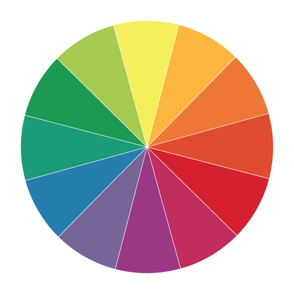
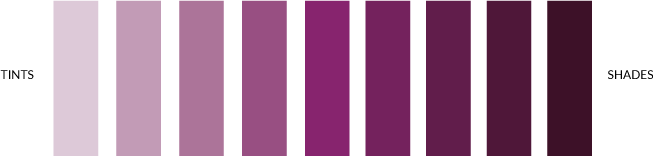

Lesson 3
Color Theory
Here are the slides from class

Color meanings vary per culture. This infographic shows how colors are mapped to different emotions depending on the culture. Death, for example, is represented by black in Western American cultures and white in Chinese cultures. Red is associated with good luck (e.g. red packets) in Chinese cultures while green is associated with good luck (e.g. four leaf clovers) in Western/American culture. Other emotions and colors are more universal. Passion is widely represented as red while evil is usually associated with black.
Colors & Logos
Graphic designer, Paula Rupolo swapped the color schemes of competing brands' logos to demonstrate the importance of color in branding. You can read an article about it at FastCoDesign.


Colors in Western/American Culture
Red
Hot, Fire, Violence, Importance, Passion
Red is probably the hardest color to execute, but also the most memorable. It’s scientifically proven to increase your heart rate and raise your blood pressure. Red also increases your metabolism and makes you want to eat more. In China, red has a very different meaning of prosperity and happiness. Red is generally used as an accent color because it is very dominating as a primary color.
Famous logos: Coca-Cola, Target, Pinterest
Orange
Cheerful, Confidence, Creativity, Health, Vitality
Orange is a very warm and inviting color because it's not as harsh as red. Because orange can also be associated with the fruit, it is also associated with vitality and health. Orange can also represent the changing of seasons, so movement and change can also be represented through orange.
Famous logos: Home Depot, Fanta
Yellow
Sunshine, Joy, Happiness, Cheerfulness, Danger
Yellow is the most energizing color in the spectrum. It's generally associated with happiness and sunshine. Yellow can also mean danger (yield sign), but it's not a strong as red. Sometimes softer yellows are used as a neutral baby color.
Famous logo: Sprint, McDonald's, Best Buy
Green
Nature, Fresh, Money, Growth, Down-to-earth, Envy
Green is often used to symbolize growth and new beginnings. Alternatively, green can also symbolize envy and greed. Green also has a very harmonizing effect because it sits very close to the border of warm vs. cool colors. Bright greens are more energetic while darker greens are more stable.
Famous logo: John Deere, Animal Planet, Whole Foods, Subway
Blue
Stability, Trust, Tranquil, Sadness
Blue is a stable color. It’s frequently used because its meaning widely depends on the shade. It is also the most commonly used color in logo design because of its neutrality. Dark blues are reliable while light blues are friendlier. Blue is also associated with peace (the Virgin Mary is usually depicted in a blue robe). Conversely, blue is often associated with sadness in Western culture.
Famous logo: Facebook, Twitter, LinkedIn
Purple
Royalty, Power, Mystery, Ambition, Creativity
Dark purple is generally associated with royalty or wealth. Lighter pastel purples are associated with spring and romance. Purple is also associated with creativity.
Famous logo: Taco Bell, Hallmark, Yahoo!
Black/Gray
Power, Elegance, Strength, Evil, Death
Black is really versatile. It is the used in both edgy and sophisticated designs. It can also be used as both a primary or accent color. Black is mostly used for typography and the most functional elements of a design.
Famous Logos: Nike, Apple, Puma
White
Purity, Cleanliness, Goodness
White also works with every color. It's usually associated with purity and cleanliness. It's used frequently in minimalistic designs. White is associated with goodness and angels are often depicted in white gowns.
Color Modes
RGB

Additive model, works with anything that emits light. In an additive system, white is a combination of color and black is the absence of color. When designing for web or a computer screen, it's better to use a RGB color model.
CMYK

Subtractive model, works on the basis of reflective light. In a subtractive system, white is the absence of color and black is the combination of color. When designing for print, it's better to use a CMYK color model.
Color Terminology
The Color Wheel
The color wheel demonstrates relationships between colors.
Basic Terms
Hue: This is the pure color on the color wheel. It's the primary value of the color and how the color red, green, blue, purple, etc. is perceived through the eye. Some people describe hues based on their angle in the color wheel.
Saturation: Describes how rich the color is, overall intensity or brightness of the color. Anything that appears dull is desaturated (fully desaturated = gray)
Value: Describes the lightness or darkness of overall color themes. 0% brightness = black, 100% brightness = full color
Tints: When white is added to a hue, the color is more feminine and light, used in pastels
Shades: When black is added to a hue
Tones: When gray is added → good for vintage